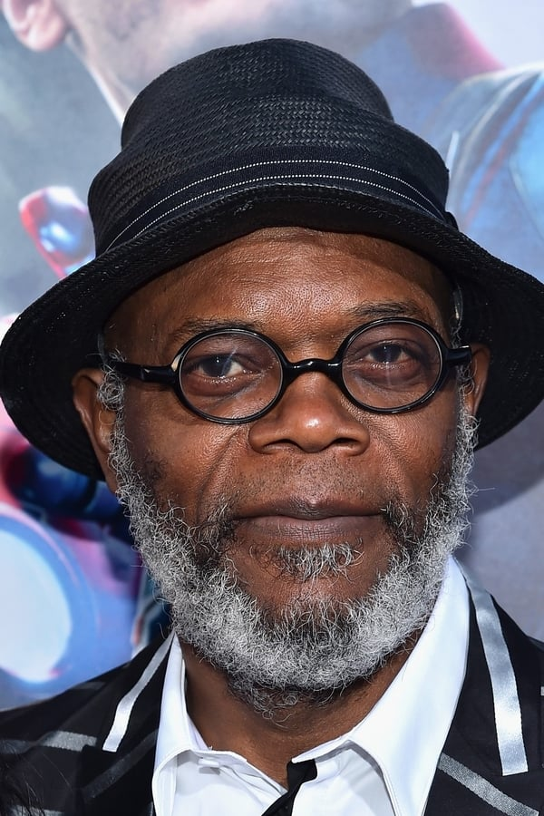
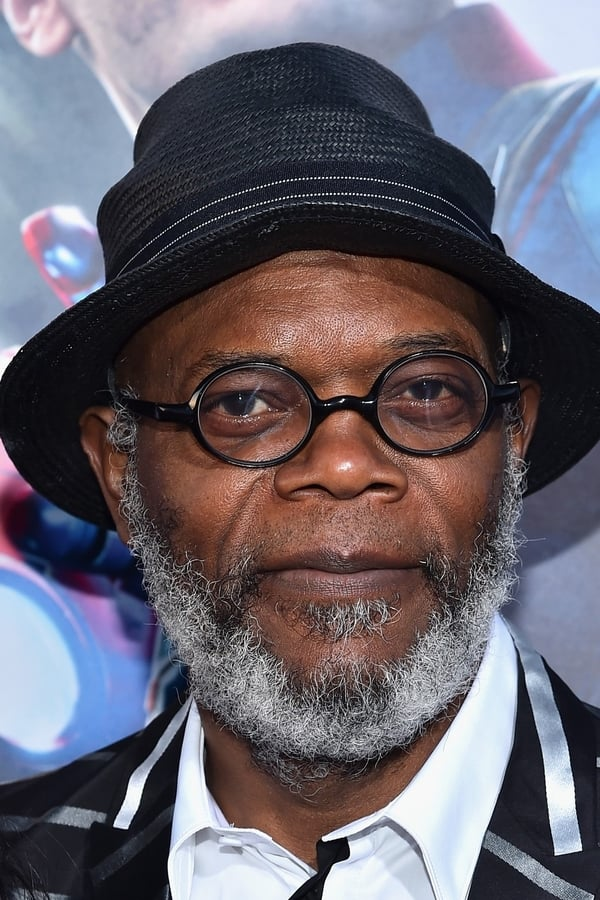

Kingsman: Servicio secreto (2014)
27/2/2015 (ES) • Crimen, Comedia, Acción, Aventura • 2h 9m
Un veterano agente secreto inglés (Colin Firth) debe entrenar a un joven sin refinar (Taron Egerton), pero que promete convertirse en un competitivo agente gracias a un ultra-programa de entrenamiento, al mismo tiempo que una amenaza global emerge procedente de un genio retorcido. Adaptación del cómic de Mark Millar y Dave Gibbons.
Matthew Vaughn
Matthew Vaughn, David Reid, Adam Bohling
 

Mark Strong
Samuel L. Jackson
Colin Firth
Taron Egerton

Fernando VII

Largometraje bastante ligero que entretiene, pero cuando acaba no te sientes completamente lleno, le falta algo de peso. Las películas de viajes en el tiempo con sus correspondientes paradojas, siempre he preferido verlas sin hacerme preguntas, pues si fuese posible realizar tales viajes a no ser que se interviniese en la historia lo cual alteraría totalmente el futuro-presente, siempre serian un bucle interminable como un pez que se muerde la cola. Analizando los aspectos técnicos que se le piden a este tipo de cine palomitero, tanto los efectos visuales como los efectos especiales están bastante conseguidos, tienen en algunos aspectos un aire al cine de serie B de los años 50 y 60. En el apartado artístico Will Smith aporta el tirón mediático para llevar a sus seguidores a las salas de cine, Josh Brolin demuestra que puede ser perfectamente el sustituto de un Tommy Lee Jones que en esta entrega de la saga más que actuar parece que este haciendo un cameo. Pero como decía al principio de la crítica le noto algo a faltar, algo de sentimiento, algo de emoción, algo de garra. ¿que os pasó tíos?
Adolfo Suarez
Acción a raudales, unas luchas espectaculares y unas actuaciones sobresalientes. Si eres de los que te gusto Kick-Ass esta te va encantar. Hasta SAMUEL L esta gracioso. MUY RECOMENDABLE PARA PASAR UN RATO MUY BUENO!
Sabodeo de Amadoya
Pese a que no puedo por menos que ver más defectos que virtudes al final esta “Kingsman” tiene su gracia por lo menos de cara a futuras secuelas. Defectos….a saber….. resulta cansino ese tono sobre la “superioridad” de la forma de vida británica (sobre todo si no eres británico)….. resulta cansina esa parte de academia a lo Harry Potter-Juego de Ender (que si no eres un crio o un adolescente pues como que tampoco)…….resulta cansino volver a ver a Samuel L. Jackson repetir su enésima versión de su personaje de Pulp Fiction (pese a que a veces haga gracia)…….resulta casino volver a ver a Michael Caine haciendo un papel que al final resulta un tanto de adorno…… resulta cansino volver a ver un guion imitando a los de James Bond (porque pese a lo que se diga varias veces en la película: sí, si es una de esas películas) …….y pese a todo hay momentos que te llaman la atención, como algunas frases del guion, pero sobre todo desde el punto de la dirección algunas escenas de acción como la de la Iglesia la cual resulta visualmente una de las más originales de los últimos años…...ahora bien, clasificarla de casi "Obra Maestra" (casi 5 estrellas) por parte de algunos críticos vamosssssss...................